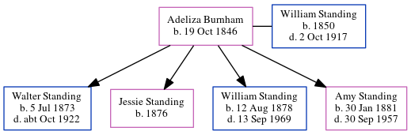

Stephen Earling Standing 1921 - 1921
[ Home ] | [ Calendar ] | [ Surnames Index ] | [ Errors ] | [ Family History ]The child of William Standing (a laundry man) and Eliza Parr, Stephen Standing, the fourth cousin once-removed on the father's side of Nigel Horne, was born in Romford, Essex, England in 19211,2.
He died on the same day2 (jul/Aug/Sep).
Parents
- William Ernest was born on 12 Aug 1878
- Eliza Mary was born on 19 May 1885
Citations
- England & Wales, Birth Index: 1916-2005 Online publication - Provo, UT, USA: The Generations Network, Inc., 2008.Original data - General Register Office. England and Wales Civil Registration Indexes. London, England: General Register Office. © Crown copyright. Published by permission of the Cont
- England & Wales, Death Index: 1984-2005 Online publication - Provo, UT, USA: The Generations Network, Inc., 2007.Original data - General Register Office. England and Wales Civil Registration Indexes. London, England: General Register Office. © Crown copyright. Published by permission of the Cont
Family Tree
Map
Generated by ged2site. Last updated on Jul 3, 2024